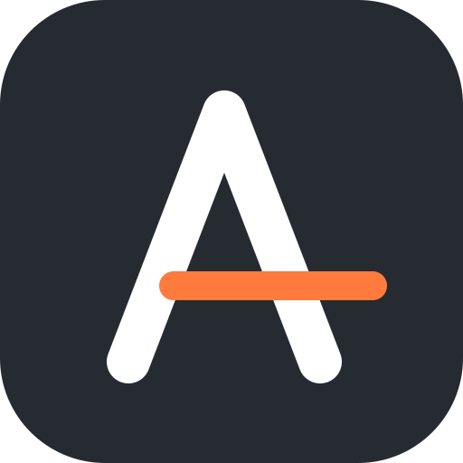

Levha, baza, tezgah ve arkalık ölçüleri projedeki tüm modüllere uygulanır; modüllerin dış ölçüsü değişmez, iç parçalar yeniden hesaplanır. Dolap ölçüleri (alt dolap gövdesi, derinlikler, üst dolap yüksekliği, genel yükseklik) bundan sonra eklenen dolaplara uygulanır; çizilmiş dolapların ölçüsü değişmez. Taç yüksekliği düz MDF taçın yüksekliğidir (taç “Görünüm › Taç”tan seçilir; lake taçların yüksekliği sabittir): mutfak bitişi = genel yükseklik + taç.
Sunum PDF'inin kapağında ve son sayfasında görünür. Bu tarayıcıda saklanır, bütün projelerde kullanılır.
Tıkladığınız tema hemen uygulanır ve bu cihazda hatırlanır. Çizimleriniz, teknik çizim ve çıktılar değişmez.
Düzen. Yeni düzende paneller ve çizim alanı ayrı kartlardır, başlık düğmeleri çerçevesizdir. Klasik düzen önceki görünümdür; renk teması iki düzende de geçerlidir.
Eşyalar odanın düzenine bakılarak kendiliğinden yerleşir: tezgahta evye ve ocağın önü boş kalır, tablolar boş duvara, saksı boş köşeye gelir. Dekor projeye modül olarak eklenmez; kesim listesini, teknik çizimi ve maliyeti etkilemez. “Gerçekçi” ve “Foto” görünümünde, fotoğrafik görüntüde ve sunum dosyasında görünür.
Önce uygulanacak yüzeyi, sonra rengi ya da malzemeyi seçin. “Gerçek” bölümlerdeki malzemeler doku resimleriyle gelir ve çizimde aynı dokuyla görünür. Bir dolabı seçip açarsanız yalnızca o dolaba da uygulayabilirsiniz.
Ekrandaki bakış ışın izlemeyle yeniden çizilir: dolaylı ışık, yansımalar ve yumuşak gölgeler hesaplanır. Önce çizimde bakışı ayarlayın, sonra “Başlat” deyin. Süre kaliteye ve bilgisayara göre yarım dakika ile birkaç dakika arasındadır.
Hazır.
load "dosya yolu"
Yerleşimi ve oda ölçüsünü seçin; dolaplar otomatik yerleşir, sonra istediğiniz gibi değiştirirsiniz. Mevcut çizimin yerine geçer (geri alınabilir).
Yerini şimdi girerseniz dolaplar buna göre dizilir: evye pencerenin altına gelir, ocak pencereden uzak durur, kapının önü boş kalır. Ölçüler duvarın sol başından (yan duvarlarda arka köşeden) milimetredir.